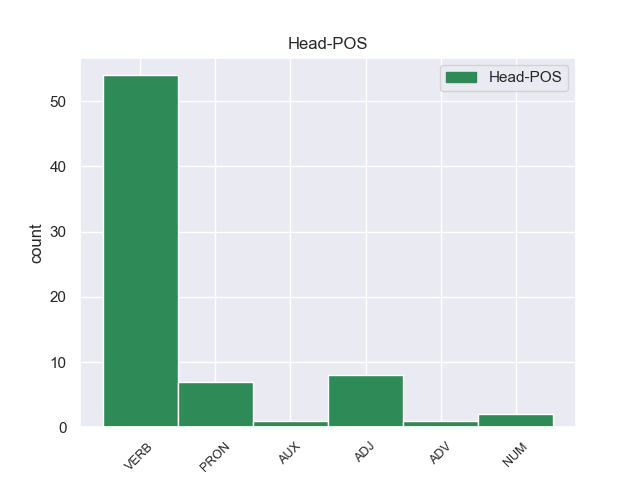
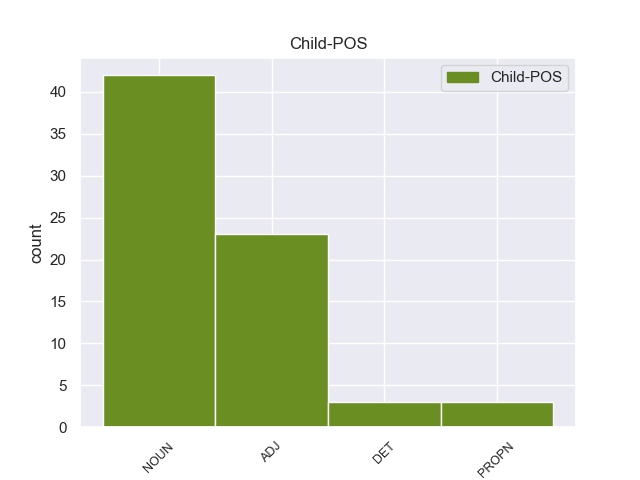

Distribution of features within this leaf



Morphosyntax Rules sorted by frequency.
- When the dependent token is the light verb construction(compound:lvc) of the head token, and the head token is VERB and the dependent token is NOUN, the Case needs to be Nom.
1 ती _ _ _ _ 0 _ _ _
2 अजून _ _ _ _ 0 _ _ _
3 जेम्सला _ _ _ _ 0 _ _ _
4 शोधायचा _ _ _ _ 0 _ _ _
5 प्रयत्न प्रयत्न NOUN _ Case=Nom|Gender=Masc|Number=Sing 6 compound:lvc _ _
6 करत करणे VERB _ Aspect=Imp|VerbForm=Part 0 _ _ _
7 आहे _ _ _ _ 0 _ _ _
8 . _ _ _ _ 0 _ _ _
1 None _ _ _ _ 0 _ _ _
2 None _ _ _ _ 0 _ _ _
3 सगळी _ _ _ _ 0 _ _ _
4 जमीन _ _ _ _ 0 _ _ _
5 तुम्ही _ _ _ _ 0 _ _ _
6 या _ _ _ _ 0 _ _ _
7 ना _ _ _ _ 0 _ _ _
8 त्या _ _ _ _ 0 _ _ _
9 मार्गाने _ _ _ _ 0 _ _ _
10 आपलीशी आपलीशी ADJ _ Case=Nom 11 xcomp _ _
11 केलीत करणे VERB _ Aspect=Perf|Gender=Neut|Number=Plur|Person=3|VerbForm=Fin 0 _ _ _
12 . _ _ _ _ 0 _ _ _
1 पुन्हा _ _ _ _ 0 _ _ _
2 थोड्या _ _ _ _ 0 _ _ _
3 None _ _ _ _ 0 _ _ _
4 None _ _ _ _ 0 _ _ _
5 बहीण _ _ _ _ 0 _ _ _
6 म्हणाली _ _ _ _ 0 _ _ _
7 , _ _ _ _ 0 _ _ _
8 दादा दादा NOUN _ Case=Nom|Gender=Masc|Number=Sing 13 vocative _ SpaceAfter=No
9 , _ _ _ _ 0 _ _ _
10 None _ _ _ _ 0 _ _ _
11 None _ _ _ _ 0 _ _ _
12 निरोप _ _ _ _ 0 _ _ _
13 दे देणे VERB _ Mood=Imp|Number=Sing|Person=2|VerbForm=Fin 0 _ _ _
14 ! _ _ _ _ 0 _ _ _
1 मिळतील _ _ _ _ 0 _ _ _
2 ते तो PRON _ Case=Nom|Distance=Dist|Gender=Masc|Number=Plur|Person=3|PronType=Rel 0 _ _ _
3 मोती मोती NOUN _ Case=Nom|Gender=Masc|Number=Plur 2 dislocated _ _
4 तोंडात _ _ _ _ 0 _ _ _
5 धरून _ _ _ _ 0 _ _ _
6 आणू _ _ _ _ 0 _ _ _
7 , _ _ _ _ 0 _ _ _
8 None _ _ _ _ 0 _ _ _
9 None _ _ _ _ 0 _ _ _
10 अंगणात _ _ _ _ 0 _ _ _
11 ढीग _ _ _ _ 0 _ _ _
12 घालू _ _ _ _ 0 _ _ _
13 ! _ _ _ _ 0 _ _ _
1 त्याला _ _ _ _ 0 _ _ _
2 म्हणावे _ _ _ _ 0 _ _ _
3 , _ _ _ _ 0 _ _ _
4 None _ _ _ _ 0 _ _ _
5 None _ _ _ _ 0 _ _ _
6 बहीण _ _ _ _ 0 _ _ _
7 तरी _ _ _ _ 0 _ _ _
8 दे _ _ _ _ 0 _ _ _
9 , _ _ _ _ 0 _ _ _
10 नाहीतर _ _ _ _ 0 _ _ _
11 रात्री _ _ _ _ 0 _ _ _
12 पायी _ _ _ _ 0 _ _ _
13 चाळीस _ _ _ _ 0 _ _ _
14 कोस _ _ _ _ 0 _ _ _
15 चालत _ _ _ _ 0 _ _ _
16 जा _ _ _ _ 0 _ _ _
17 व _ _ _ _ 0 _ _ _
18 त्या _ _ _ _ 0 _ _ _
19 अंधाऱ्या _ _ _ _ 0 _ _ _
20 None _ _ _ _ 0 _ _ _
21 None _ _ _ _ 0 _ _ _
22 पांढरी _ _ _ _ 0 _ _ _
23 फुले _ _ _ _ 0 _ _ _
24 घेऊन _ _ _ _ 0 _ _ _
25 उजाडत _ _ _ _ 0 _ _ _
26 हजर _ _ _ _ 0 _ _ _
27 हो _ _ _ _ 0 _ _ _
28 , _ _ _ _ 0 _ _ _
29 नाहीतर _ _ _ _ 0 _ _ _
30 डोके डोके NOUN _ Case=Nom|Gender=Neut|Number=Sing 31 nsubj:pass _ _
31 उडवण्यात उडवणे VERB _ Case=Loc|InfForm=Dict|VerbForm=Inf 0 _ _ _
32 येईल _ _ _ _ 0 _ _ _
33 ! _ _ _ _ 0 _ _ _
1 " _ _ _ _ 0 _ _ _
2 देव _ _ _ _ 0 _ _ _
3 काही _ _ _ _ 0 _ _ _
4 मेला मरणे VERB _ Aspect=Perf|Gender=Masc|Number=Sing|Person=3|VerbForm=Fin 0 _ _ _
5 नाही _ _ _ _ 0 _ _ _
6 , _ _ _ _ 0 _ _ _
7 केशवबाबा केशवबाबा PROPN _ Case=Nom|Gender=Masc|Number=Sing 4 vocative _ SpaceAfter=No
8 ! _ _ _ _ 0 _ _ _
9 " _ _ _ _ 0 _ _ _
1 त्याने _ _ _ _ 0 _ _ _
2 शेषाला _ _ _ _ 0 _ _ _
3 सारा सारा ADJ _ Case=Nom|Gender=Masc|Number=Sing 5 amod _ _
4 वृत्तान्त _ _ _ _ 0 _ _ _
5 निवेदला निवेदणे VERB _ Aspect=Perf|Gender=Masc|Number=Sing|Person=3|VerbForm=Fin 0 _ _ _
6 . _ _ _ _ 0 _ _ _
1 कुशल _ _ _ _ 0 _ _ _
2 प्रश्न _ _ _ _ 0 _ _ _
3 None _ _ _ _ 0 _ _ _
4 None _ _ _ _ 0 _ _ _
5 राजा _ _ _ _ 0 _ _ _
6 म्हणाला _ _ _ _ 0 _ _ _
7 , _ _ _ _ 0 _ _ _
8 None _ _ _ _ 0 _ _ _
9 None _ _ _ _ 0 _ _ _
10 पत्नी _ _ _ _ 0 _ _ _
11 फार _ _ _ _ 0 _ _ _
12 लावण्यवती लावण्यवती ADJ _ Case=Nom|Gender=Fem|Number=Sing 15 ccomp _ _
13 आहे _ _ _ _ 0 _ _ _
14 असे _ _ _ _ 0 _ _ _
15 ऐकतो ऐकणे VERB _ Aspect=Imp|Gender=Masc|Number=Sing|Person=3|Tense=Pres|VerbForm=Fin 0 _ _ _
16 . _ _ _ _ 0 _ _ _
1 None _ _ _ _ 0 _ _ _
2 None _ _ _ _ 0 _ _ _
3 दयाळू दयाळू ADJ _ Case=Nom 0 _ _ _
4 - _ _ _ _ 0 _ _ _
5 मायाळू मायाळू ADJ _ Case=Nom 3 compound _ _
6 हो _ _ _ _ 0 _ _ _
7 ! _ _ _ _ 0 _ _ _
1 ती तो DET _ Case=Nom|Distance=Prox|Gender=Neut|Number=Plur|PronType=Dem 2 det _ _
2 चौघे चौघे PRON _ Case=Nom|Number=Plur|Person=3 0 _ _ _
3 जात _ _ _ _ 0 _ _ _
4 होती _ _ _ _ 0 _ _ _
5 . _ _ _ _ 0 _ _ _
1 दुसरी दुसरा ADJ _ Case=Nom|Gender=Neut|Number=Plur 2 amod _ _
2 दोन दोन NUM _ _ 0 _ _ _
3 विकावी _ _ _ _ 0 _ _ _
4 लागली _ _ _ _ 0 _ _ _
5 नाहीत _ _ _ _ 0 _ _ _
6 . _ _ _ _ 0 _ _ _
1 मध्ये _ _ _ _ 0 _ _ _
2 None _ _ _ _ 0 _ _ _
3 None _ _ _ _ 0 _ _ _
4 None _ _ _ _ 0 _ _ _
5 हे _ _ _ _ 0 _ _ _
6 शेत _ _ _ _ 0 _ _ _
7 आडवे आडवा ADJ _ Case=Nom|Gender=Neut|Number=Sing 8 compound:lvc _ _
8 येते येणे VERB _ Aspect=Imp|Gender=Neut|Number=Sing|Person=3|Tense=Pres|VerbForm=Fin 0 _ _ _
9 . _ _ _ _ 0 _ _ _
1 खुशमस्कऱ्या _ _ _ _ 0 _ _ _
2 None _ _ _ _ 0 _ _ _
3 None _ _ _ _ 0 _ _ _
4 गेला _ _ _ _ 0 _ _ _
5 व _ _ _ _ 0 _ _ _
6 म्हणाला _ _ _ _ 0 _ _ _
7 , _ _ _ _ 0 _ _ _
8 राजा _ _ _ _ 0 _ _ _
9 , _ _ _ _ 0 _ _ _
10 राजा राजा NOUN _ Case=Nom|Gender=Masc|Number=Sing 17 discourse _ SpaceAfter=No
11 , _ _ _ _ 0 _ _ _
12 त्या _ _ _ _ 0 _ _ _
13 None _ _ _ _ 0 _ _ _
14 None _ _ _ _ 0 _ _ _
15 बहीण _ _ _ _ 0 _ _ _
16 फार _ _ _ _ 0 _ _ _
17 सुंदर सुंदर ADJ _ Case=Nom 0 _ _ _
18 आहे _ _ _ _ 0 _ _ _
19 . _ _ _ _ 0 _ _ _
1 तो _ _ _ _ 0 _ _ _
2 दुसरा _ _ _ _ 0 _ _ _
3 भाऊ _ _ _ _ 0 _ _ _
4 येऊन _ _ _ _ 0 _ _ _
5 म्हणाला म्हणणे VERB _ Aspect=Perf|Gender=Masc|Number=Sing|Person=3|VerbForm=Fin 0 _ _ _
6 , _ _ _ _ 0 _ _ _
7 दादा _ _ _ _ 0 _ _ _
8 , _ _ _ _ 0 _ _ _
9 का _ _ _ _ 0 _ _ _
10 दु:खी दुःखी ADJ _ Case=Nom 5 parataxis _ SpaceAfter=No
11 ? _ _ _ _ 0 _ _ _
1 रडू रडणे VERB _ Mood=Imp|Person=2|Polarity=Neg|VerbForm=Fin 0 _ _ _
2 नकोस _ _ _ _ 0 _ _ _
3 , _ _ _ _ 0 _ _ _
4 दादा दादा NOUN _ Case=Nom|Gender=Masc|Number=Sing 1 discourse _ SpaceAfter=No
5 . _ _ _ _ 0 _ _ _
1 हे हा PRON _ Distance=Prox|Gender=Neut|Number=Sing|Person=3 0 _ _ _
2 घे _ _ _ _ 0 _ _ _
3 चार _ _ _ _ 0 _ _ _
4 लाडू लाडू NOUN _ Case=Nom|Gender=Masc|Number=Plur 1 appos _ _
5 . _ _ _ _ 0 _ _ _
1 त्या _ _ _ _ 0 _ _ _
2 None _ _ _ _ 0 _ _ _
3 None _ _ _ _ 0 _ _ _
4 त्याला _ _ _ _ 0 _ _ _
5 आठवण आठवण NOUN _ Case=Nom|Gender=Fem|Number=Sing 6 compound:lvc _ _
6 झाली होणे AUX _ Aspect=Perf|Gender=Fem|Number=Sing|Person=3|VerbForm=Fin 0 _ _ _
7 . _ _ _ _ 0 _ _ _
1 अर्धा अर्धा ADJ _ Case=Nom|Gender=Masc|Number=Sing 2 compound:redup _ _
2 अर्धा अर्धा ADJ _ Case=Nom|Gender=Masc|Number=Sing 0 _ _ _
3 लाडू _ _ _ _ 0 _ _ _
4 दोघांनी _ _ _ _ 0 _ _ _
5 खाल्ला _ _ _ _ 0 _ _ _
6 . _ _ _ _ 0 _ _ _
1 None _ _ _ _ 0 _ _ _
2 None _ _ _ _ 0 _ _ _
3 एकटा एकटा ADJ _ Case=Nom|Gender=Masc|Number=Sing 4 amod _ _
4 का का ADV _ _ 0 _ _ _
5 ? _ _ _ _ 0 _ _ _
6 राजपुत्राने _ _ _ _ 0 _ _ _
7 विचारले _ _ _ _ 0 _ _ _
8 . _ _ _ _ 0 _ _ _
1 तो तो DET _ Case=Nom|Distance=Prox|Gender=Masc|Number=Sing|PronType=Dem 4 det _ _
2 आणखी _ _ _ _ 0 _ _ _
3 एक _ _ _ _ 0 _ _ _
4 तरुण तरुण ADJ _ Case=Nom 0 _ _ _
5 धावत _ _ _ _ 0 _ _ _
6 आला _ _ _ _ 0 _ _ _
7 . _ _ _ _ 0 _ _ _
1 ती _ _ _ _ 0 _ _ _
2 म्हणाली _ _ _ _ 0 _ _ _
3 , _ _ _ _ 0 _ _ _
4 राजाला _ _ _ _ 0 _ _ _
5 सांग सांगणे VERB _ Mood=Imp|Number=Sing|Person=2|VerbForm=Fin 0 _ _ _
6 मी _ _ _ _ 0 _ _ _
7 व्रती व्रती NOUN _ Case=Nom|Gender=Fem|Number=Sing 5 ccomp _ _
8 आहे _ _ _ _ 0 _ _ _
9 . _ _ _ _ 0 _ _ _
1 राजा _ _ _ _ 0 _ _ _
2 खुशमस्कऱ्याला _ _ _ _ 0 _ _ _
3 म्हणाला म्हणणे VERB _ Aspect=Perf|Gender=Masc|Number=Sing|Person=3|VerbForm=Fin 0 _ _ _
4 , _ _ _ _ 0 _ _ _
5 आता _ _ _ _ 0 _ _ _
6 कोणता _ _ _ _ 0 _ _ _
7 उपाय उपाय NOUN _ Case=Nom|Gender=Masc|Number=Sing 3 parataxis _ SpaceAfter=No
8 ? _ _ _ _ 0 _ _ _
1 तो _ _ _ _ 0 _ _ _
2 दुसरा _ _ _ _ 0 _ _ _
3 भाऊ _ _ _ _ 0 _ _ _
4 येऊन _ _ _ _ 0 _ _ _
5 म्हणाला _ _ _ _ 0 _ _ _
6 , _ _ _ _ 0 _ _ _
7 दादा दादा NOUN _ Case=Nom|Gender=Masc|Number=Sing 10 vocative _ SpaceAfter=No
8 , _ _ _ _ 0 _ _ _
9 का _ _ _ _ 0 _ _ _
10 दु:खी दुःखी ADJ _ Case=Nom 0 _ _ _
11 ? _ _ _ _ 0 _ _ _
1 _ असा ADJ _ Case=Nom|Gender=Masc|Number=Sing 3 amod _ _
2 None _ _ _ _ 0 _ _ _
3 दयाळू दयाळू ADJ _ Case=Nom 0 _ _ _
4 - _ _ _ _ 0 _ _ _
5 मायाळू _ _ _ _ 0 _ _ _
6 हो _ _ _ _ 0 _ _ _
7 ! _ _ _ _ 0 _ _ _
1 राग _ _ _ _ 0 _ _ _
2 नका _ _ _ _ 0 _ _ _
3 मानू _ _ _ _ 0 _ _ _
4 दादा _ _ _ _ 0 _ _ _
5 ; _ _ _ _ 0 _ _ _
6 परंतु _ _ _ _ 0 _ _ _
7 खरे खरा ADJ _ Case=Nom|Gender=Neut|Number=Sing 8 amod _ _
8 ते तो PRON _ Distance=Dist|Gender=Neut|Number=Sing|Person=3 0 _ _ _
9 मी _ _ _ _ 0 _ _ _
10 सांगतो _ _ _ _ 0 _ _ _
11 . _ _ _ _ 0 _ _ _
non-conforming Examples:
1 " _ _ _ _ 0 _ _ _
2 आज _ _ _ _ 0 _ _ _
3 त्याला _ _ _ _ 0 _ _ _
4 हाकलून _ _ _ _ 0 _ _ _
5 देणे _ _ _ _ 0 _ _ _
6 तुला _ _ _ _ 0 _ _ _
7 None _ _ _ _ 0 _ _ _
8 None _ _ _ _ 0 _ _ _
9 वाटले वाटणे VERB _ Aspect=Perf|Gender=Neut|Number=Sing|Person=3|VerbForm=Fin 0 _ _ _
10 तरी _ _ _ _ 0 _ _ _
11 None _ _ _ _ 0 _ _ _
12 None _ _ _ _ 0 _ _ _
13 _ हित NOUN _ Case=Obl|Gender=Neut|Number=Sing 9 ccomp _ _
14 None _ _ _ _ 0 _ _ _
15 आहे _ _ _ _ 0 _ _ _
16 , _ _ _ _ 0 _ _ _
17 " _ _ _ _ 0 _ _ _
18 तो _ _ _ _ 0 _ _ _
19 म्हणाला _ _ _ _ 0 _ _ _
20 . _ _ _ _ 0 _ _ _
1 डराव _ _ _ _ 0 _ _ _
2 , _ _ _ _ 0 _ _ _
3 डराव _ _ _ _ 0 _ _ _
4 करून _ _ _ _ 0 _ _ _
5 त्याने _ _ _ _ 0 _ _ _
6 बेडकांना _ _ _ _ 0 _ _ _
7 हाका हाक NOUN _ Case=Obl|Gender=Fem|Number=Plur 8 compound:lvc _ _
8 मारल्या मारणे VERB _ Aspect=Perf|Gender=Fem|Number=Plur|Person=3|VerbForm=Fin 0 _ _ _
9 . _ _ _ _ 0 _ _ _